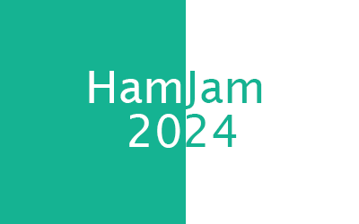
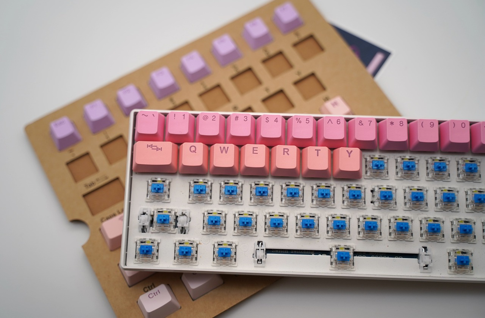

Velkommen til HamarTech 2024!
Innlandets største Teknologifestival
Innlandets største Teknologifestival
HamarTech er en årlig ukeslang Teknologifestival som ligger i Hamar, arrangert for første gang i 2024.
Festivalen skjer både digitalt og fysisk, med målet å gjøre teknologi så tilgjengelig som mulig.
HamarTech er Innlandets største møteplass for alle som har en interesse i teknologi.
Alle er velkommen! Enten om du er godt kjent med teknologi eller bare vil prøve for første gang, vi har noe som passer deg!
HamarTech arrangerer en Quizkonkurranse. Quizzen er 5 spørsmål lang, og har et fokus på Teknologi.
Hvis du klarer å alle spørsmålene riktig, vil du bli med i trekningen av en High-End Datamaskin fra InfinityTech Systems.
De som ikke klarer å få alt riktig, kan fortsatt bli med på trekningen av andre premier.
Premieutdeling skjer på HamarTech
HamarTechs egne spillutviklingskonkurranse.
Temaet blir avslørt på starten av dag 1, og varer helt til slutten av HamarTech.
Innleveringer blir anmeldt av et panel med 5 dommere.
Alle spillmotorer er tillat.
Premie: 5000kr til Førsteplass
Innlandets største 3D Modelleringskonkurranse
Temaet blir avslørt på starten av dag 2, og varer til slutten av dag 4.
Innleveringer blir anmeldt av et panel med 3 dommere.
Alle 3D Modelleringsprogram er tillat
Premie: 4500kr til Førsteplass
En Spillmoddingskonkurranse
Deltagere må lage en enkel mod for et spill som blir avslørt på starten av dag 4.
Konkurransen varer helt til slutten av HamarTech
Innleveringer blir anmelt av et panel med 3 dommere som er kjent med modfelleskapet til spillet.
Premie: 3000kr til Førsteplass, 500kr til Andre og Tredjeplass.
Lær å bruke Unity og C# til spillprogrammering med å lage en enkel spillprototype.
Kjører Kontinuerlig hele uken.
Enkelt Begynnerskurs i Programmering, som viser deg alt du trenger for å kunne begynne med programmering.
Lær de enkleste programmeringskonseptene i et kurs for alle aldere.
Lær JavaScript eller Python.
Kjører Kontinuerlig hele uken.
Enkel opplæring i Blender og 3D Modellering.
Kjører Kontinuerlig hele uken.

Et testhjørne som lar folk prøve VR for første gang.
Spill: Google Earth, Beatsaber, Superhot
Lær å bruke en 3D Printer, og print ut egne modeller.
Åpent fra starten av dag 3, og varer til slutten av HamarTech.
Et møtehjørne for mekanisk-tastatur entusiaster (Mechanical Keyboards)
Prøv ferdigbygde tastaturer og snakk med tastaturintereserte, direkte i Hamar.
Åpnre tidlig dag 3 og varer til slutten av HamarTech.
